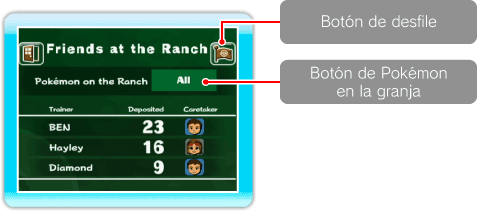
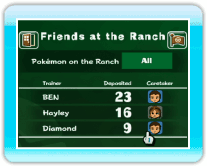
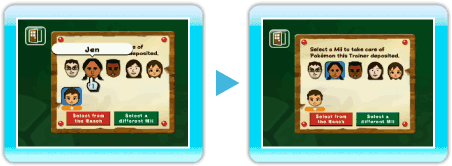
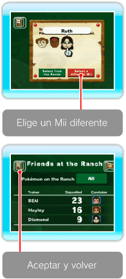

|
17
|
Deposit Details (detalles)
|
 |
|
Puedes comprobar los Pokémon de la granja, consultar información de los Mii y ver el desfile Pokémon. También puedes cambiar la selección de Pokémon que quieres
llevar a la granja si apuntas al Pokémon en el botón de Pokémon de
la granja y oprimes  ¿Qué es un encargado Pokémon?
Es un Mii que cuida de los Pokémon que un entrenador lleva a la granja. Cuando designas un encargado, éste y los Pokémon se harán amigos. Cambiar el encargado de los Pokémon
En la pantalla de Deposit Details (detalles), apunta al Mii
que quieres cambiar y oprime
Cuando se visualice la pantalla de configuración del
encargado, apunta al Mii que quieras cambiar y oprime 
 Si quieres
seleccionar un Mii diferente del que tienes en la pantalla de
configuración, apunta a Select a different Mii (elige un Mii
diferente) y oprime Cuando hayas completado la configuración, apunta a Okay and
Return (aceptar y volver) y oprime
Cuando borras un Mii en el Canal Mii, éste desaparecerá de la granja y otro Mii se asignará automáticamente como encargado. Añadir un Pokémon a favoritos
Esta función está disponible cuando llevas un número
determinado de Pokémon a la granja. Cuando añades Pokémon a
Favorites (favoritos), tienes la opción de llevar solamente ese tipo
de Pokémon a la granja. Para añadir a Favorites (favoritos), apunta
a
 Desfile DesfileCuando apuntas al botón Go to a Parade (desfile) y oprimes |
 . Puedes cambiar la selección a All (todos), Trainer
(entrenador) o Favorites (favoritos).
. Puedes cambiar la selección a All (todos), Trainer
(entrenador) o Favorites (favoritos). debajo de su cara es el encargado asignado de
la granja.
debajo de su cara es el encargado asignado de
la granja. cerca del nombre del Pokémon y oprime
cerca del nombre del Pokémon y oprime 
 |
 |
 |